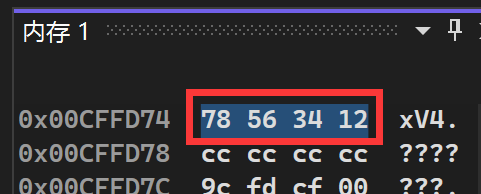
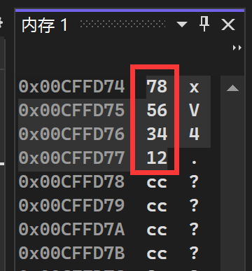

该系列为本人的学习笔记，主要由本人整理书写而成。部分内容来自教材、视频课程等，不能保证完全原创性。
萌新的学习笔记，写错了恳请斧正。
# 大小端字节序
# 什么是大小端
首先，我们要知道，整数（short、int、long、long long）在内存中以补码的形式存储，无符号整数（unsigned）在内存中以原始二进制序列存储。
当数据长度小于等于一个字节时 ，很显然计算机就直接存储在一个字节内（内存存储的基本单元是字节）。而大小端字节序，则是超过一个字节的数据在内存中存储的两种方式。
为了更清楚的理解大小端字节序，下面我们创建一个变量 a：
#include <stdio.h> | |
int main() | |
{ | |
int a = 0x12345678; | |
return 0; | |
} |
我们知道 int 整型占 4 个字节，也就是说 12、34、56、78 会分别存储在 4 个字节单元中。那么，这 4 个字节单元在内存中是从高地址向低地址排列还是由低向高就成了一个问题。
我们把 78 这一头叫做数据的低位字节，12 那一头叫做高位字节。那么：
- 将数据的低位字节存储在内存的高位，就叫大端存储，对应大端机器
- 将数据的低位字节存储在内存的低位，就叫小端存储，对应小端机器
下面我们在 Visual Stodio（x86 Debug）环境下调试上方代码， 并打开内存窗口，观察变量 a 的内存空间：

这就是将数据的低位字节（78）储存在了内存的低位，是小端存储模式。
我们常用的大多数环境（x86、x64…）都是小端结构（ 有计算优势），但是仍然存在大端模式的机器（如 KEIL C51）。甚至有些 ARM 处理器可以让硬件选择采用大端还是小端。
# 写一个判断大小端的程序
其实很简单，我们截取数字 1 在内存中的第一个字节即可。
如果输出是 1 就是小端机器，如果是 0 就是大端机器。
#include <stdio.h> | |
int check_sys() | |
{ | |
int i = 1; | |
return *(char*)&i; | |
} | |
int main() | |
{ | |
if (check_sys()) | |
printf("该机器为小端字节序机器\n"); | |
else | |
printf("该机器为大端字节序机器\n"); | |
return 0; | |
} |
这里先取 a 的地址、强制类型转换为 char * 再解引用来取出 a 在内存中的第一个字节。
注意：这里不能直接将 a 强制类型转换为 char 类型来读取第一个字节，因为这样永远只会截取数据最低位的字节，和大小端机器无关。
或者我们也可以用联合体的方式取第一个字节（联合体相关内容在之后的笔记）：
int check_sys() | |
{ | |
union | |
{ | |
int i; | |
char c; | |
} u; | |
u.i = 1; | |
return u.c; | |
} |
# 浮点数在内存中的存储（IEEE 754 规则）
# 引入
浮点数包括 float、double、long double 等类型，可写成小数形式（3.14）或科学计数法（1.1E2）
不同浮点数的数据范围在 float.h 头文件中被规定
下面我们看一段代码：
#include <stdio.h> | |
int main() | |
{ | |
int n = 9; | |
float* p = (float*)&n; | |
printf("n的值为：%d\n", n); | |
printf("*p的值为：%f\n", *p); | |
*p = 9.0; | |
printf("n的值为：%d\n", n); | |
printf("*p的值为：%f\n", *p); | |
return 0; | |
} |
这段代码的输出结果为：
n的值为：9 | |
*p的值为：0.000000 | |
n的值为：1091567616 | |
*p的值为：9.000000 |
明明 n 与 * p 在内存中是同一个数，为什么会出现上方的情况呢？
这与浮点数在内存中的存储有关
# 存储规则解释
浮点数在内存中的存储遵循 IEEE 754 规则，由电气与电子工程师协会（IEEE）规定
以单精度浮点数为例，我们将其分为 3 个部分存储在内存中（都是 01 组成的二进制）：
- 符号位 S：1 位，0 代表正数，1 代表负数
- 阶码 E：8 位，就是科学计数法的指数部分加 127（因为其表示精度的是 - 126 次方到 127 次方，要加上 127 让阶码从数字 1 到 254 便于存储，因此单精度浮点数也叫余 127 码）（阶码 0 与 255 有特殊含义，见下方读取相关内容）
- 尾数 M：23 位，就是科学计数法中数字小数点后的部分
以数字 5.0 为例：
- 其为正数，则 S=0
- 其可以表示成二进制科学计数法 1.01*2^2，则尾数 M 为 01000000000000000000000
- 其科学计数法指数为 2 加上 127 得到阶码 E=129=10000001（二进制）
- 合起来就能得到数字 5.0 在内存中的存储：0100 0000 1010 0000 0000 0000 0000 0000
对于双精度浮点数，其规则与单精度浮点数类似，但是阶码变为 11 位（余 1023 码），尾数变为 52 位。总字节数由 4 字节变为 8 字节。
# 读取规则解释
读取时有 3 种情况：
# 1. 阶码不全为 0 或全为 1（规格化数）
读取时阶码减去 127（或 1023）得到指数部分，尾数加 1 得到数字部分
所以说单精度浮点数规格化数的指数范围是 - 126 到 127
# 2. 阶码全为 0（非规格化数）
读取时阶码 ** 加一再减去 127（或 1023）** 得到指数部分（加一使浮点数取值连续），尾数不加 1，用于表示极其接近 0 的数字
如果尾数也全为 0，则代表浮点数的 ±0
# 3. 阶码全为 1，尾数全为 0（inf）
被判定为浮点数的无穷，正负由符号位决定，用代码 inf 表示
# 4. 阶码全为 1，尾数不全为 0（非数，NaN，Not a Number）
用代码 NaN 表示，用于表示异常数据（比如某个数除以 0 就会返回 NaN，也有可能输出 IND-indeterminate 不确定的）
# 练习
# 1. 浮点数
这时上面浮点数存储开头的那一段代码就好理解了
首先第一部分将整型 9 当做浮点数输出，整型 9 在内存中存储为：
0000 0000 0000 0000 0000 0000 0000 1001
将其当做浮点数，则 S=0，阶码 E=00000000，由上面非规格化数内容我们知道这是一个趋近于 0 的数，所以输出了 0.000000
第二部分将浮点数 9.0 当做整数输出，浮点数 9 在内存中存储为：
0100 0001 0001 0000 0000 0000 0000 0000
将其当做整型输出即补码转换为原码为：1091567616
# 2. 整型存储
# a. 下面程序的输出为
#include <stdio.h> | |
int main() | |
{ | |
char a = -1; | |
signed char b = -1; | |
unsigned char c = -1; | |
printf("a=%d,b=%d,c=%d", a, b, c); | |
return 0; | |
} |
就是很简单的截取，输出 a=-1,b=-1,c=255
# b. 下面两个程序的输出为
#include <stdio.h> | |
int main() | |
{ | |
char a = -128; | |
printf("%u\n", a); | |
return 0; | |
} |
#include <stdio.h> | |
int main() | |
{ | |
char a = 128; | |
printf("%u\n", a); | |
return 0; | |
} |
两个程序的输出结果均为 4294967168
也是简单的整型提升的问题
比如第一段程序 - 128 的补码为 1111 1111 1111 1111 1111 1111 1000 0000
截取到 a 为 1000 0000，整型提升回 1111 1111 1111 1111 1111 1111 1000 0000
其直接二进制转换十进制为 4294967168
第二段等价，对于 char 来说 127 之上就循环回到 - 128，所以 128 与 - 128 在这里没有区别
# c. 下面程序的输出为
#include <stdio.h> | |
int main() | |
{ | |
char a[1000]; | |
int i; | |
for (i = 0; i < 1000; i++) | |
{ | |
a[i] = -1 - i; | |
} | |
printf("%d", strlen(a)); | |
return 0; | |
} |
此代码输出为 255
同样的，对于 char 类型，-128 在减一就循环回到了 127。所以这里就是从 - 1 一直降到 - 128，在从 127 降到 1（strlen 遇到 “\0” 结束，其 ASCII 码为 0，所以之后的没意义）
# d. 下面两个程序的输出为
#include <stdio.h> | |
unsigned char i = 0; | |
int main() | |
{ | |
for (i = 0; i <= 255; i++) | |
{ | |
printf("hello world\n"); | |
} | |
return 0; | |
} |
#include <stdio.h> | |
int main() | |
{ | |
unsigned int i; | |
for (i = 9; i >= 0; i--) | |
{ | |
printf("%u\n", i); | |
} | |
return 0; | |
} |
这两段代码都是死循环，很简单
# e. 下面程序的输出为（假设小端环境）
#include <stdio.h> | |
int main() | |
{ | |
int a[4] = { 1, 2, 3, 4 }; | |
int* ptr1 = (int*)(&a + 1); | |
int* ptr2 = (int*)((int)a + 1); | |
printf("%x,%x", ptr1[-1], *ptr2); | |
return 0; | |
} |
其输出结果为 4,2000000（有可能引发读取访问权限冲突）
很好理解，指针 1 减一指向数组第 4 个元素，指针 2 指向第一个元素向后偏移一位字节，也就是略过了数字 1 内存第一个字节又加上了数字 2 内存第一个字节。在小端环境下即为 0x02000000